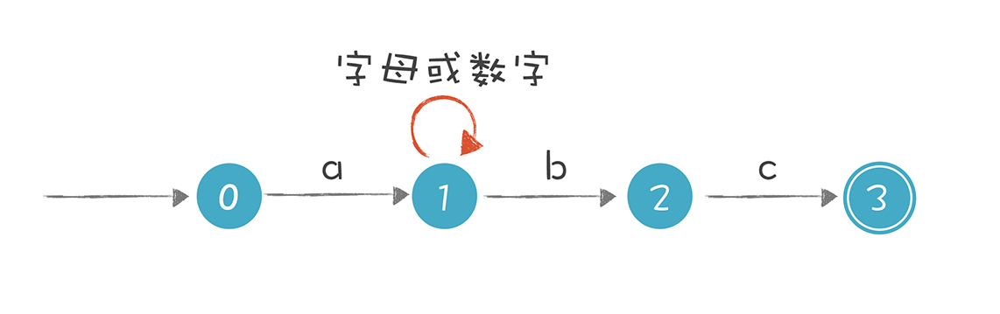
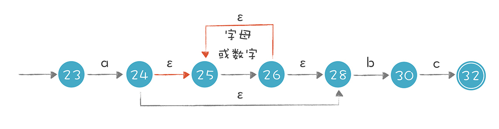
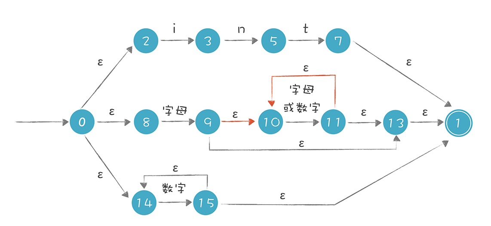
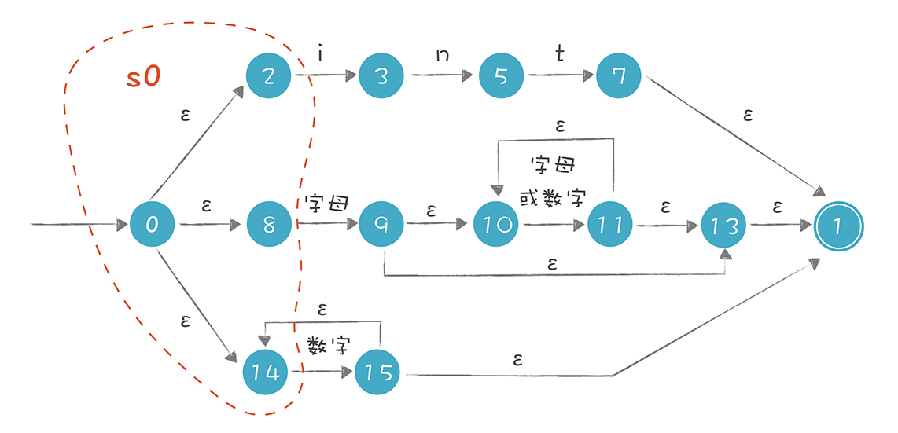
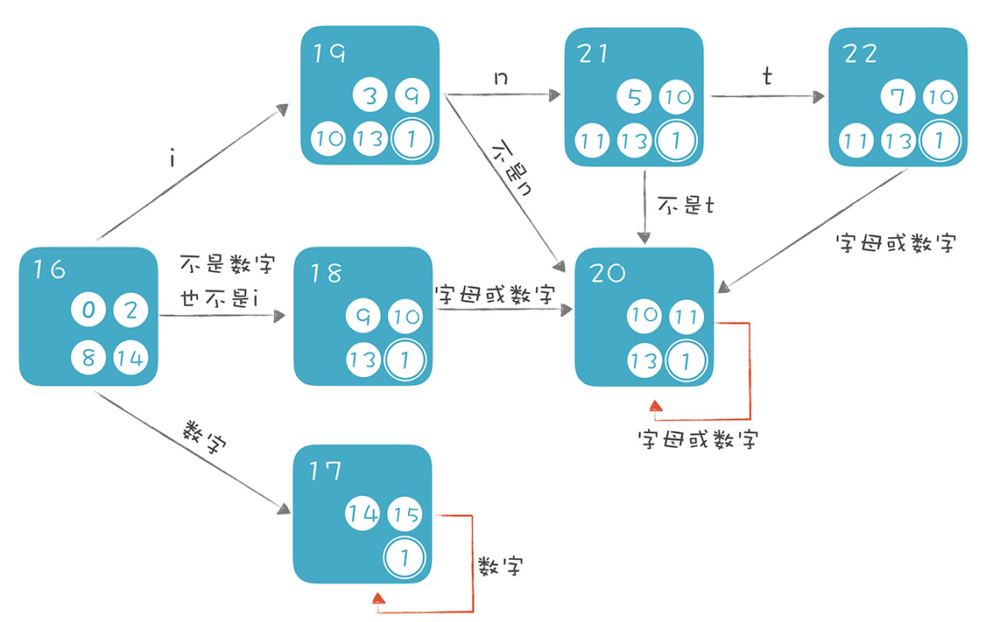

- 00 开篇词 为什么你要学习编译原理？.md.html
- 01 理解代码：编译器的前端技术.md.html
- 02 正则文法和有限自动机：纯手工打造词法分析器.md.html
- 03 语法分析（一）：纯手工打造公式计算器.md.html
- 04 语法分析（二）：解决二元表达式中的难点.md.html
- 05 语法分析（三）：实现一门简单的脚本语言.md.html
- 06 编译器前端工具（一）：用Antlr生成词法、语法分析器.md.html
- 07 编译器前端工具（二）：用Antlr重构脚本语言.md.html
- 08 作用域和生存期：实现块作用域和函数.md.html
- 09 面向对象：实现数据和方法的封装.md.html
- 10 闭包： 理解了原理，它就不反直觉了.md.html
- 11 语义分析（上）：如何建立一个完善的类型系统？.md.html
- 12 语义分析（下）：如何做上下文相关情况的处理？.md.html
- 13 继承和多态：面向对象运行期的动态特性.md.html
- 14 前端技术应用（一）：如何透明地支持数据库分库分表？.md.html
- 15 前端技术应用（二）：如何设计一个报表工具？.md.html
- 16 NFA和DFA：如何自己实现一个正则表达式工具？.md.html
- 17 First和Follow集合：用LL算法推演一个实例.md.html
- 18 移进和规约：用LR算法推演一个实例.md.html
- 19 案例总结与热点问题答疑：对于左递归的语法，为什么我的推导不是左递归的？.md.html
- 20 高效运行：编译器的后端技术.md.html
- 21 运行时机制：突破现象看本质，透过语法看运行时.md.html
- 22 生成汇编代码（一）：汇编语言其实不难学.md.html
- 23 生成汇编代码（二）：把脚本编译成可执行文件.md.html
- 24 中间代码：兼容不同的语言和硬件.md.html
- 25 后端技术的重用：LLVM不仅仅让你高效.md.html
- 26 生成IR：实现静态编译的语言.md.html
- 27 代码优化：为什么你的代码比他的更高效？.md.html
- 28 数据流分析：你写的程序，它更懂.md.html
- 29 目标代码的生成和优化（一）：如何适应各种硬件架构？.md.html
- 30 目标代码的生成和优化（二）：如何适应各种硬件架构？.md.html
- 31 内存计算：对海量数据做计算，到底可以有多快？.md.html
- 32 字节码生成：为什么Spring技术很强大？.md.html
- 33 垃圾收集：能否不停下整个世界？.md.html
- 34 运行时优化：即时编译的原理和作用.md.html
- 35 案例总结与热点问题答疑：后端部分真的比前端部分难吗？.md.html
- 36 当前技术的发展趋势以及其对编译技术的影响.md.html
- 37 云编程：云计算会如何改变编程模式？.md.html
- 38 元编程：一边写程序，一边写语言.md.html
- 加餐 汇编代码编程与栈帧管理.md.html
- 用户故事 因为热爱，所以坚持.md.html
- 第二季回归 这次，我们一起实战解析真实世界的编译器.md.html
- 结束语 用程序语言，推动这个世界的演化.md.html
- 捐赠
16 NFA和DFA：如何自己实现一个正则表达式工具？
回顾之前讲的内容，原理篇重在建立直观理解，帮你建立信心，这是第一轮的认知迭代。应用篇帮你涉足应用领域，在解决领域问题时发挥编译技术的威力，积累运用编译技术的一手经验，也启发你用编译技术去解决更多的领域问题，这是第二轮的认知迭代。而为时三节课的算法篇将你是第三轮的认知迭代。
在第三轮的认知迭代中，我会带你掌握前端技术中的核心算法。而本节课，我就借“怎样实现正则表达式工具？”这个问题，探讨第一组算法：与正则表达式处理有关的算法。
在词法分析阶段，我们可以手工构造有限自动机（FSA，或FSM）实现词法解析，过程比较简单。现在我们不再手工构造词法分析器，而是直接用正则表达式解析词法。
你会发现，我们只要写一些规则，就能基于这些规则分析和处理文本。这种能够理解正则表达式的功能，除了能生成词法分析器，还有很多用途。比如Linux的三个超级命令，又称三剑客（grep、awk和sed），都是因为能够直接支持正则表达式，功能才变得强大的。
接下来，我就带你完成编写正则表达式工具的任务，与此同时，你就能用正则文法生成词法分析器了：
首先，把正则表达式翻译成非确定的有限自动机（Nondeterministic Finite Automaton，NFA）。- 其次，基于NFA处理字符串，看看它有什么特点。- 然后，把非确定的有限自动机转换成确定的有限自动机（Deterministic Finite Automaton，DFA）- 最后，运行DFA，看看它有什么特点。
强调一下，不要被非确定的有限自动机、确定的有限自动机这些概念吓倒，我肯定让你学明白。
认识DFA和NFA
在讲词法分析时，我提到有限自动机（FSA）有有限个状态。识别Token的过程，就是FSA状态迁移的过程。其中，FSA分为确定的有限自动机（DFA）和非确定的有限自动机（NFA）。
DFA的特点是，在任何一个状态，我们基于输入的字符串，都能做一个确定的转换，比如：

NFA的特点是，它存在某些状态，针对某些输入，不能做一个确定的转换，这又细分成两种情况：
- 对于一个输入，它有两个状态可以转换。
- 存在ε转换。也就是没有任何输入的情况下，也可以从一个状态迁移到另一个状态。
比如，“a[a-zA-Z0-9]*bc”这个正则表达式对字符串的要求是以a开头，以bc结尾，a和bc之间可以有任意多个字母或数字。在图中状态1的节点输入b时，这个状态是有两条路径可以选择的，所以这个有限自动机是一个NFA。

这个NFA还有引入ε转换的画法，它们是等价的。实际上，第二个NFA可以用我们今天讲的算法，通过正则表达式自动生成出来。

需要注意的是，无论是NFA还是DFA，都等价于正则表达式。也就是，所有的正则表达式都能转换成NFA或DFA，所有的NFA或DFA，也都能转换成正则表达式。
理解了NFA和DFA之后，来看看我们如何从正则表达式生成NFA。
从正则表达式生成NFA
我们需要把它分为两个子任务：
第一个子任务，是把正则表达式解析成一个内部的数据结构，便于后续的程序使用。因为正则表达式也是个字符串，所以要先做一个小的编译器，去理解代表正则表达式的字符串。我们可以偷个懒，直接针对示例的正则表达式生成相应的数据结构，不需要做出这个编译器。
用来测试的正则表达式可以是int关键字、标识符，或者数字字面量：
int | [a-zA-Z][a-zA-Z0-9]* | [0-9]+
我用下面这段代码创建了一个树状的数据结构，来代表用来测试的正则表达式：
private static GrammarNode sampleGrammar1() {
GrammarNode node = new GrammarNode("regex1",GrammarNodeType.Or);
//int关键字
GrammarNode intNode = node.createChild(GrammarNodeType.And);
intNode.createChild(new CharSet('i'));
intNode.createChild(new CharSet('n'));
intNode.createChild(new CharSet('t'));
//标识符
GrammarNode idNode = node.createChild(GrammarNodeType.And);
GrammarNode firstLetter = idNode.createChild(CharSet.letter);
GrammarNode letterOrDigit = idNode.createChild(CharSet.letterOrDigit);
letterOrDigit.setRepeatTimes(0, -1);
//数字字面量
GrammarNode literalNode = node.createChild(CharSet.digit);
literalNode.setRepeatTimes(1, -1);
return node;
}
打印输出的结果如下：
RegExpression
Or
Union
i
n
t
Union
[a-z]|[A-Z]
[0-9]|[a-z]|[A-Z]*
[0-9]+
画成图会更直观一些：

测试数据生成之后，第二个子任务就是把表示正则表达式的数据结构，转换成一个NFA。这个过程比较简单，因为针对正则表达式中的每一个结构，我们都可以按照一个固定的规则做转换。
- 识别ε的NFA：
不接受任何输入，也能从一个状态迁移到另一个状态，状态图的边上标注ε。
- 识别i的NFA：
当接受字符i的时候，引发一个转换，状态图的边上标注i。

- 转换“s|t”这样的正则表达式：
它的意思是或者s，或者t，二者选一。s和t本身是两个子表达式，我们可以增加两个新的状态：开始状态和接受状态（最终状态）也就是图中带双线的状态，它意味着被检验的字符串此时是符合正则表达式的。然后用ε转换分别连接代表s和t的子图。它的含义也比较直观，要么走上面这条路径，那就是s，要么走下面这条路径，那就是t。

- 转换“st”这样的正则表达式：
s之后接着出现t，转换规则是把s的开始状态变成st整体的开始状态，把t的结束状态变成st整体的结束状态，并且把s的结束状态和t的开始状态合二为一。这样就把两个子图接了起来，走完s接着走t。
- 对于“?”“*”和“+”这样的操作：
意思是可以重复0次、0到多次、1到多次，转换时要增加额外的状态和边。
以“s*”为例，做下面的转换：

你能看出，它可以从i直接到f，也就是对s匹配零次，也可以在s的起止节点上循环多次。
- “s+”：
没有办法跳过s，s至少经过一次。

按照这些规则，我们可以编写程序进行转换。你可以参考示例代码Regex.java中的regexToNFA方法。转换完毕以后，将生成的NFA打印输出，列出了所有的状态，以及每个状态到其他状态的转换，比如“0 ε -> 2”的意思是从状态0通过ε转换，到达状态2 ：
NFA states:
0 ε -> 2
ε -> 8
ε -> 14
2 i -> 3
3 n -> 5
5 t -> 7
7 ε -> 1
1 (end)
acceptable
8 [a-z]|[A-Z] -> 9
9 ε -> 10
ε -> 13
10 [0-9]|[a-z]|[A-Z] -> 11
11 ε -> 10
ε -> 13
13 ε -> 1
14 [0-9] -> 15
15 ε -> 14
ε -> 1
我用图片直观地展示了输出结果，图中分为上中下三条路径，你能清晰地看出解析int关键字、标识符和数字字面量的过程：

生成NFA之后，如何利用它识别某个字符串是否符合这个NFA代表的正则表达式呢？
以上图为例，当我们解析intA这个字符串时，首先选择最上面的路径去匹配，匹配完int这三个字符以后，来到状态7，若后面没有其他字符，就可以到达接受状态1，返回匹配成功的信息。可实际上，int后面是有A的，所以第一条路径匹配失败。
失败之后不能直接返回“匹配失败”的结果，因为还有其他路径，所以我们要回溯到状态0，去尝试第二条路径，在第二条路径中，尝试成功了。
运行Regex.java中的matchWithNFA()方法，你可以用NFA来做正则表达式的匹配：
/**
* 用NFA来匹配字符串
* @param state 当前所在的状态
* @param chars 要匹配的字符串，用数组表示
* @param index1 当前匹配字符开始的位置。
* @return 匹配后，新index的位置。指向匹配成功的字符的下一个字符。
*/
private static int matchWithNFA(State state, char[] chars, int index1){
System.out.println("trying state : " + state.name + ", index =" + index1);
int index2 = index1;
for (Transition transition : state.transitions()){
State nextState = state.getState(transition);
//epsilon转换
if (transition.isEpsilon()){
index2 = matchWithNFA(nextState, chars, index1);
if (index2 == chars.length){
break;
}
}
//消化掉一个字符，指针前移
else if (transition.match(chars[index1])){
index2 ++; //消耗掉一个字符
if (index2 < chars.length) {
index2 = matchWithNFA(nextState, chars, index1 + 1);
}
//如果已经扫描完所有字符
//检查当前状态是否是接受状态，或者可以通过epsilon到达接受状态
//如果状态机还没有到达接受状态，本次匹配失败
else {
if (acceptable(nextState)) {
break;
}
else{
index2 = -1;
}
}
}
}
return index2;
}
其中，在匹配“intA”时，你会看到它的回溯过程：
NFA matching: 'intA'
trying state : 0, index =0
trying state : 2, index =0 //先走第一条路径，即int关键字这个路径
trying state : 3, index =1
trying state : 5, index =2
trying state : 7, index =3
trying state : 1, index =3 //到了末尾了，发现还有字符'A'没有匹配上
trying state : 8, index =0 //回溯，尝试第二条路径，即标识符
trying state : 9, index =1
trying state : 10, index =1 //在10和11这里循环多次
trying state : 11, index =2
trying state : 10, index =2
trying state : 11, index =3
trying state : 10, index =3
true
从中可以看到用NFA算法的特点：因为存在多条可能的路径，所以需要试探和回溯，在比较极端的情况下，回溯次数会非常多，性能会变得非常慢。特别是当处理类似s*这样的语句时，因为s可以重复0到无穷次，所以在匹配字符串时，可能需要尝试很多次。
注意，在我们生成的NFA中，如果一个状态有两条路径到其他状态，算法会依据一定的顺序来尝试不同的路径。
9和11两个状态都有两条向外走的线，其中红色的线是更优先的路径，也就是尝试让*号匹配尽量多的字符。这种算法策略叫做“贪婪（greedy）”策略。
在有的情况下，我们会希望让算法采用非贪婪策略，或者叫“忽略优先”策略，以便让效率更高。有的正则表达式工具会支持多加一个?，比如??、*?、+?，来表示非贪婪策略。
NFA的运行可能导致大量的回溯，所以能否将NFA转换成DFA，让字符串的匹配过程更简单呢？如果能的话，那整个过程都可以自动化，从正则表达式到NFA，再从NFA到DFA。
把NFA转换成DFA
的确有这样的算法，那就是子集构造法，它的思路如下。
首先NFA有一个初始状态（从状态0通过ε转换可以到达的所有状态，也就是说，在不接受任何输入的情况下，从状态0也可以到达的状态）。这个状态的集合叫做“状态0的ε闭包”，简单一点儿，我们称之为s0，s0包含0、2、8、14这几个状态。

将字母i给到s0中的每一个状态，看它们能转换成什么状态，再把这些状态通过ε转换就能到达的状态也加入进来，形成一个包含“3、9、10、13、1”5个状态的集合s1。其中3和9是接受了字母i所迁移到的状态，10、13、1是在状态9的ε闭包中。

在s0和s1中间画条迁移线，标注上i，意思是s0接收到i的情况下，转换到s1：
在这里，我们把s0和s1分别看成一个状态。也就是说，要生成的DFA，它的每个状态，是原来的NFA的某些状态的集合。
在上面的推导过程中，我们有两个主要的计算：
1.ε-closure(s)，即集合s的ε闭包。也就是从集合s中的每个节点，加上从这个节点出发通过ε转换所能到达的所有状态。- 2.move(s, ‘i’)，即从集合s接收一个字符i，所能到达的新状态的集合。- 所以，s1 = ε-closure(move(s0,‘i’))
按照上面的思路继续推导，识别int关键字的识别路径也就推导出来了：

我们把上面这种推导的思路写成算法，参见Regex.java中的NFA2DFA()方法。我写了一段伪代码，方便你阅读：
计算s0，即状态0的ε闭包
把s0压入待处理栈
把s0加入所有状态集的集合S
循环：待处理栈内还有未处理的状态集
循环：针对字母表中的每个字符c
循环：针对栈里的每个状态集合s(i)（未处理的状态集）
计算s(m) = move(s(i), c)（就是从s(i)出发，接收字符c能够
迁移到的新状态的集合）
计算s(m)的ε闭包，叫做s(j)
看看s(j)是不是个新的状态集，如果已经有这个状态集了，把它找出来
否则，把s(j)加入全集S和待处理栈
建立s(i)到s(j)的连线，转换条件是c
运行NFA2DFA()方法，然后打印输出生成的DFA。画成图，你就能很直观地看出迁移的路径了：

从初始状态开始，如果输入是i，那就走int识别这条线，也就是按照19、21、22这条线依次迁移，如果中间发现不符合int模式，就跳转到20，也就是标识符状态。
注意，在上面的DFA中，只要包含接受状态1的，都是DFA的接受状态。进一步区分的话，22是int关键字的接受状态，因为它包含了int关键字原来的接受状态7。同理，17是数字字面量的接受状态，18、19、20、21都是标识符的接受状态。
而且，你会发现，算法生成的DFA跟手工构造DFA是很接近的！我们在第二讲手工构造了DFA识别int关键字和标识符，比本节课少识别一个数字字面量：
不过，光看对int关键字和标识符的识别，我们算法生成的DFA和手工构造的DFA，非常相似！手工构造的相当于把18和20两个状态合并了，所以，这个算法是非常有效的！你可以运行一下示例程序Regex.java中的matchWithDFA()的方法，看看效果：
private static boolean matchWithDFA(DFAState state, char[] chars, int index){
System.out.println("trying DFAState : " + state.name + ", index =" + index);
//根据字符，找到下一个状态
DFAState nextState = null;
for (Transition transition : state.transitions()){
if (transition.match(chars[index])){
nextState = (DFAState)state.getState(transition);
break;
}
}
if (nextState != null){
//继续匹配字符串
if (index < chars.length-1){
return matchWithDFA(nextState,chars, index + 1);
}
else{
//字符串已经匹配完毕
//看看是否到达了接受状态
if(state.isAcceptable()){
return true;
}
else{
return false;
}
}
}
else{
return false;
}
}
运行时会打印输出匹配过程，而执行过程中不产生任何回溯。
现在，我们可以自动生成DFA了，可以根据DFA做更高效的计算。不过，有利就有弊，DFA也存在一些缺点。比如，DFA可能有很多个状态。
假设原来NFA的状态有n个，那么把它们组合成不同的集合，可能的集合总数是2的n次方个。针对我们示例的NFA，它有13个状态，所以最坏的情况下，形成的DFA可能有2的13次方，也就是8192个状态，会占据更多的内存空间。而且生成这个DFA本身也需要消耗一定的计算时间。
当然了，这种最坏的状态很少发生，我们示例的NFA生成DFA后，只有7个状态。
课程小结
本节课，我带你实现了一个正则表达式工具，或者说根据正则表达式自动做了词法分析，它们的主要原理是相同的。
首先，我们需要解析正则表达式，形成计算机内部的数据结构，然后要把这个正则表达式生成NFA。我们可以基于NFA进行字符串的匹配，或者把NFA转换成DFA，再进行字符串匹配。
NFA和DFA有各自的优缺点：NFA通常状态数量比较少，可以直接用来进行计算，但可能会涉及回溯，从而性能低下；DFA的状态数量可能很大，占用更多的空间，并且生成DFA本身也需要消耗计算资源。所以，我们根据实际需求选择采用NFA还是DFA就可以了。
不过，一般来说，正则表达式工具可以直接基于NFA。而词法分析器（如Lex），则是基于DFA。原因很简单，因为在生成词法分析工具时，只需要计算一次DFA，就可以基于这个DFA做很多次词法分析。
一课一思
本节课我们实现了一个简单的正则表达式工具。在你的日常编程任务中，有哪些需要进行正则处理的需求？用传统的正则表达式工具有没有性能问题？你有没有办法用本节课讲到的原理来优化这些工作？欢迎在留言区分享你的发现。
最后，感谢你的阅读，如果这篇文章让你有所收获，也欢迎你将它分享给更多的朋友。
本节课的示例代码我放在了文末，供你参考。
© 2019 - 2023 Liangliang Lee. Powered by gin and hexo-theme-book.